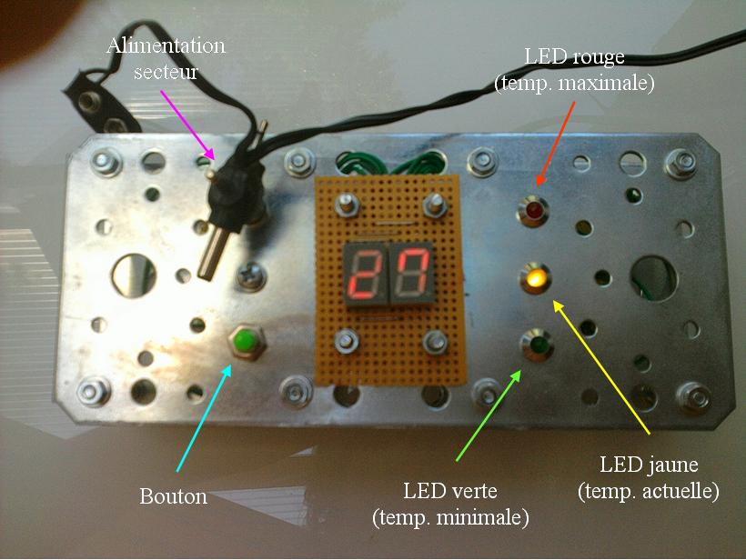
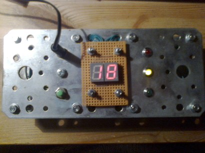

Thermomètre numérique
Voici un thermomètre électronique très simple à réaliser avec peu de composants.
Ce projet était un prétexte pour me familiariser avec les microcontrôleurs de la famille PIC18 de chez Microchip. Ainsi, le circuit électronique et le logiciel embarqué sont très simples.
La photo ci-dessous montre la réalisation finale (comme vous pouvez le constater, mon cahier des charges ne spécifiait pas que le produit fini devait être agréable à regarder...). L'affichage sur l'écran se fait à la fréquence de 60Hz, ce qui convient parfaitement à l'oeil humain, mais c'est trop lent pour le capteur de l'appareil photo (car il n'est pas sujet à la persistence rétinienne). C'est pourquoi on ne voit pas correctement les chiffres sur la photo,
{kind=link}
Caractéristiques techniques
- Plage de mesure : 0 à 50°C
- Précision du capteur : 0.5°C
- Précision du thermomètre : 1°C
- Capteur de température : LM35DZ
- CPU : microcontrôleur PIC18F1220 cadencé à 1 MHz
- Alimentation : secteur
- Consommation en mode veille : 10 mA
- Consommation en mode affichage : de 90 à 100 mA selon les chiffres affichés
Description du fonctionnement
Le thermomètre affiche la température de la pièce en temps réel, mais il est aussi capable d'afficher la plus haute température relevée depuis qu'il est sous tension ainsi que la plus basse. Un dernier mode de fonctionnement éteint tous les voyants du thermomètre mais ce dernier continue à relever la température. Ce mode évite que les afficheurs du thermomètre ne génèrent des lumières gênantes lorsque la pièce est plongée dans l'obscurité.
L'interface est constituée d'un unique bouton.
Lors de la mise sous tension, le thermomètre affiche la température actuelle de la pièce. La LED centrale jaune est allumée.
Une pression sur le bouton fait passer l'appareil en mode d'affichage de la plus basse température relevée. La LED verte est allumée.
Une autre pression sur le bouton met l'appareil en état de veille apparente, mais il continue à fonctionner sans rien afficher.
Une nouvelle pression sur le bouton affiche le plus haute température relevée. La LED rouge est allumée.
Il suffit de réappuyer sur le bouton pour afficher de nouveau la température actuelle. Les modes d'affichage forment un cycle.
Voici l'interface de l'appareil :
{kind=link}
Circuit électronique
Le microcontrôleur dispose de nombreux périphériques, ce qui limite grandement le nombre de composants externes.
Ceci est la représentation schématique du circuit :

Voici une rapide description du fonctionnement :
- Le microcontrôleur est cadencé à 1MHz par son oscillateur interne.
- Le capteur de température sort une tension analogique de 10mV/°C. Il est relié au canal n°0 du convertisseur analogique-numérique du microcontrôleur. Ce module permet au microcontrôleur de convertir la tension analogique comprise entre 0 et 5V en un nombre compris entre 0 et 1023. Il est ainsi possible d'avoir une représentation de la valeur de la tension issue du capteur.
- A cause du faible nombre de pattes disponible sur le microcontrôleur, l'affichage sur les afficheurs 7 segments a dû être multiplexé. Chaque afficheur est rafraîchi à la fréquence de 60Hz. Le port B du PIC envoie les données représentant l'image à afficher, tandis que les sorties 6 et 7 du port A se chargent de sélectionner l'afficheur qui recevra les données. Les deux transistors PNP BC558 servent d'interface de puissance car le courant demandé par chaque afficheur est trop important pour être fourni par le PIC.
- L'alimentation +5V est fournie par un L7805C. Ce régulateur se comporte exactement comme un classique 7805 mais intègre en plus une diode autorisant une tension de sortie supérieure à celle d'entrée, ce qui grillerait un 7805 "normal". C'est pour cela que j'ai pu mettre le condensateur de 47μF directement sur la sortie. Ce condensateur est une réserve d'énergie utilisée lorsque les segments des afficheurs s'allument. Cela évite que le microcontrôleur ne subisse une chute de tension à ce moment précis.
- Le microcontrôleur est capable de fournir un courant de 25mA par patte. Comme les LEDs ne consomment que 15mA environ, elles sont directement reliées aux sortie 2, 3 et 4 du port A.
- Pour terminer, l'unique bouton est à la masse lorsqu'il est relâché ou à +5V lorsque l'on appuie dessus.
Logiciel embarqué
Le code source (ainsi que le schéma précédent) sont en anglais dans le but de les rendre accessibles à une plus grande majorité de personnes.
Le code source sera peut-être disponible sur GitHub, même s'il est loin d'être optimisé ! Il a été écrit en C pour l'environnement de développement gratuit SourceBoost version 6.97, mais il devrait compiler correctement avec les versions ultérieures (NON TESTÉ).
Le programme est constitué de plusieurs machines d'états :
- Le module Timer0 génère une interruption à une fréquence de 120Hz pour rafraîchir un afficheur sur deux. De cette façon, chaque afficheur est rafraîchi à une fréquence de 60Hz.
- La boucle principale détecte si l'utilisateur a appuyé sur le bouton. Si oui, une machine d'états détermine le nouveau mode d'affichage en fonction de l'ancien.
- En fonction du mode d'affichage choisi, les bonnes valeurs sont converties et affichées à l'écran.
- Version 1.1 : Le module Timer1 génère une interruption toutes les secondes pour lire la valeur du capteur de température. Ainsi, l'affichage n'est mis à jour qu'une seule fois par seconde, ce qui permet de mieux visualiser une incertitude entre deux températures proches.
Les images suivantes montrent la meilleure stabilité de l'affichage :
 Retour au menu des projets